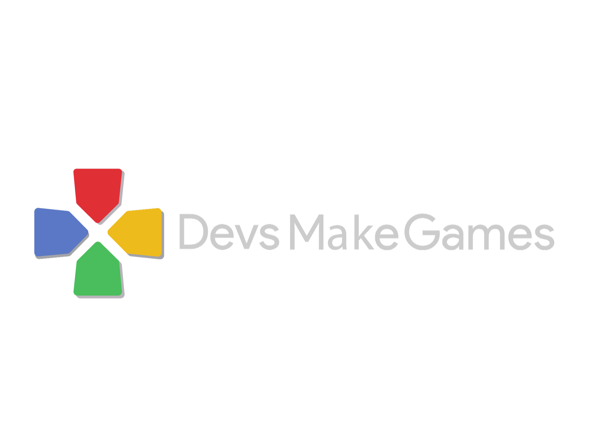

Chi sono
Sono Michele Maresca, sono un programmatore web e di videogiochi in HTML5.
Vivo in Sicilia, a Roccalumera, in provincia di Messina e sono Membro del Google Developer Group Catania. I miei interessi sono la bicicletta, fumetti, film e videogiochi.
Progetti
E’ il mio progetto personale. Allo stato attuale si tratta di una pagina Facebook che ha lo scopo di valorizzare il videogioco come un lavoro dignitoso.
Il prossimo step è quello di trasformarlo in un Blog.

Si tratta di una community catanese che parla di videogiochi a 360°: dal gioco a budget irrisorio alle produzioni più importanti.
Inoltre, grazie alla collaborazione del Google Developer Group, si occupa di portare gli sviluppatori locali e non in eventi dove possono avere un loro spazio per mostrare i loro prodotti videoludici.